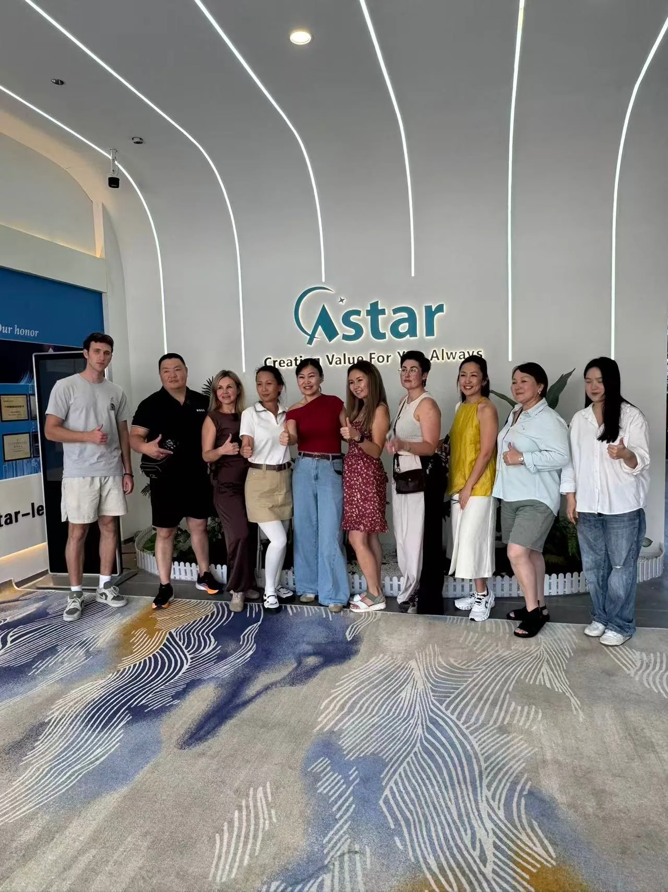
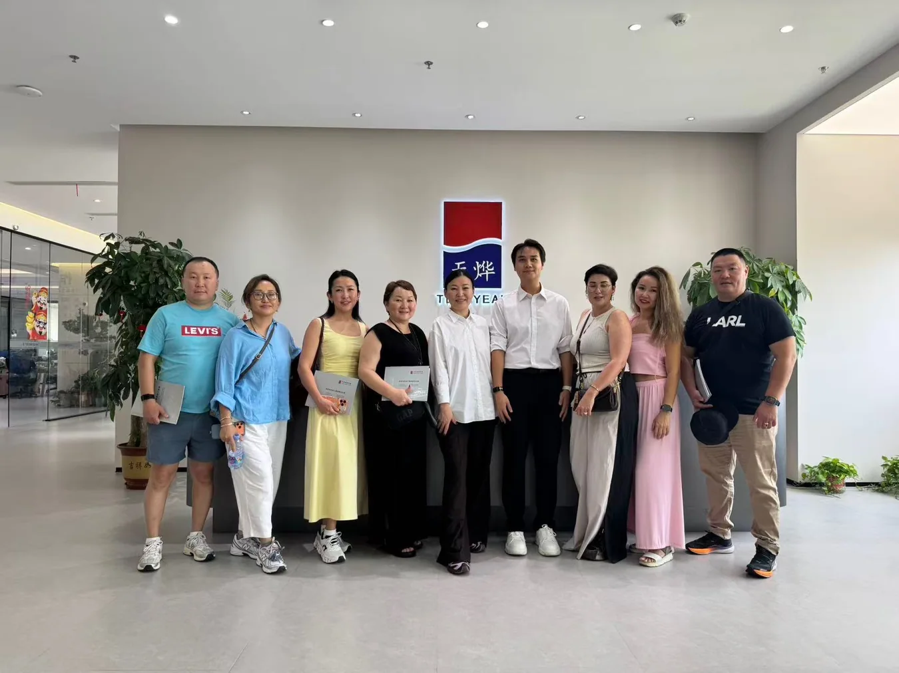
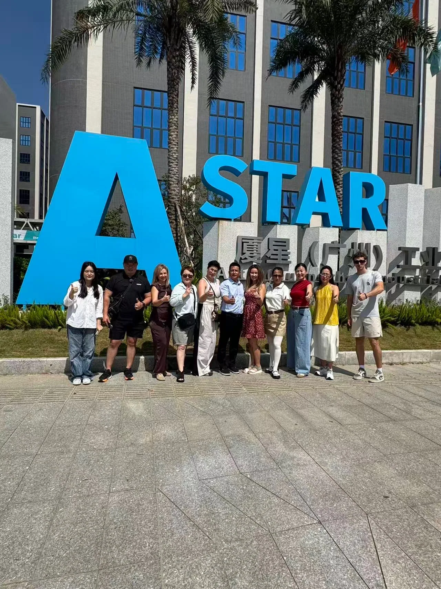

01 / ЗАВОДЫ
Производство изнутри
Технологические площадки и оборудование в рабочем контексте.
Поездки в Китай для предпринимателей: заводы, отраслевые выставки и личные встречи. Можно увидеть оборудование, задать вопросы производителям и пообщаться с людьми из своей отрасли.
Деловая экспедиция помогает лично увидеть отрасль и задать вопросы там, где создаются технологии.

Технологические площадки и оборудование в рабочем контексте.

Новые продукты, направления и общение с представителями рынка.

Обмен опытом и профессиональные знакомства.

Программу поездки обсуждаем исходя из интересов группы. Важно не просто посмотреть оборудование, а понять, как оно работает и можно ли применить увиденное в своём бизнесе.
Даты, программа, заводы и условия участия согласуются для каждой экспедиции.
Деловая программа и предпринимательская среда с одной стороны. Язык, переговоры и практическая работа с Китаем — с другой.

13+ лет в предпринимательстве · сооснователь бизнес-клуба NOMADS · основатель «Кредит-Партнёр».
Организует бизнес-разборы, мастермайнды и деловые встречи. Помогает участникам увидеть бизнес-смысл технологических решений.

Магистр китайского языка · выпускница китайского университета · опыт работы с производителями и поставками оборудования.
Свободно владеет китайским языком. Работала на авиационном заводе, занималась оптимизацией и автоматизацией бизнес-процессов.
Зачем это участникам: не просто увидеть оборудование, а задать производителям предметные вопросы, обсудить применимость технологий и определить следующий шаг для своего бизнеса.
Подробнее о командеРеальные фотографии нашей команды с предприятий ASTAR, Teemyeah и отраслевой выставки в Шэньчжэне.


Что производите, какой объём нужен и что хотите улучшить? Начнём с разговора о продукте и подберём вопросы к производителям.